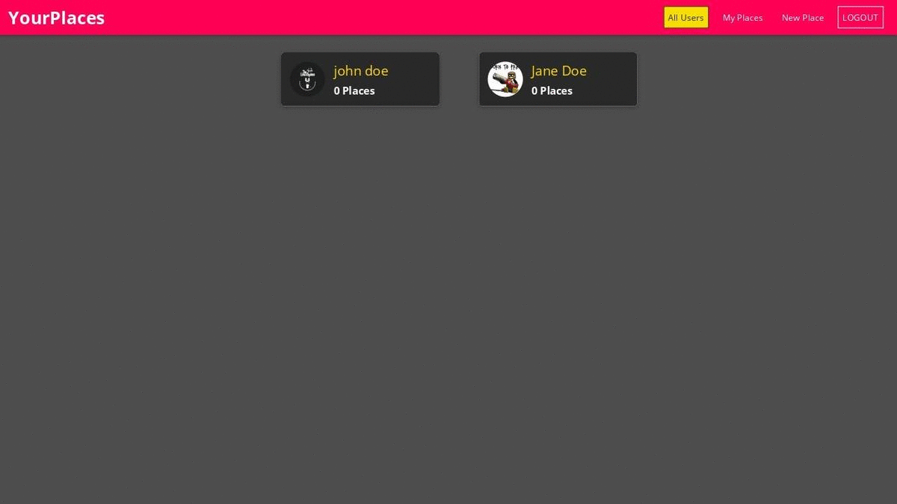

MERN Stack - The MERN Fullstack Guide
Table of Contents
MERN Fullstack Guide
MERN stands for MongoDB, Express, React, Node, after the four key technologies that make up the stack.
- MongoDB - document database
- Express(.js) - Node.js web framework
- React(.js) - a client-side JavaScript framework
- Node(.js) - the premier JavaScript web server
MERN is one of several variations of the MEAN stack (MongoDB Express Angular Node), where the traditional Angular.js frontend framework is replaced with React.js. Other variants include MEVN (MongoDB, Express, Vue, Node), and really any frontend JavaScript framework can work.
Express and Node make up the middle (application) tier. Express.js is a server-side web framework, and Node.js the popular and powerful JavaScript server platform. Regardless of which variant you choose, ME(RVA)N is the ideal approach to working with JavaScript and JSON, all the way through.
How does the MERN stack work?
The MERN architecture allows you to easily construct a 3-tier architecture (frontend, backend, database) entirely using JavaScript and JSON.

Figure 1: MERN Stack Architecture
React.js Front End
The top tier of the MERN stack is React.js, the declarative JavaScript framework for creating dynamic client-side applications in HTML. React lets you build up complex interfaces through simple Components, connect them to data on your backend server, and render them as HTML.
React’s strong suit is handling stateful, data-driven interfaces with minimal code and minimal pain, and it has all the bells and whistles you’d expect from a modern web framework: great support for forms, error handling, events, lists, and more.
JSX
JSX is a syntax extension to JavaScript. JSX produces React “elements”. We will explore rendering them to the DOM in the next section. Below, you can find the basics of JSX necessary to get you started.
React embraces the fact that rendering logic is inherently coupled with other UI logic: how events are handled, how the state changes over time, and how the data is prepared for display.
Instead of artificially separating technologies by putting markup and logic in separate files, React separates concerns with loosely coupled units called “components” that contain both. We will come back to components in a further section, but if you’re not yet comfortable putting markup in JS, this talk might convince you otherwise.
React doesn’t require using JSX, but most people find it helpful as a visual aid when working with UI inside the JavaScript code. It also allows React to show more useful error and warning messages.
event.preventDefault()
The preventDefault() method cancels the event if it is cancelable, meaning that the default action that belongs to the event will not occur.
React’s actual event listener is also at the root of the document, meaning the click event has already bubbled to the root. You can use event.nativeEvent.stopImmediatePropagation to prevent other event listeners from firing, but order of execution is not guaranteed. — ssorallen in ReactJS SyntheticEvent stopPropagation() only works with React events?
React doesn’t actually attach event handlers to the nodes themselves. When React starts up, it starts listening for all events at the top level using a single event listener. —React Official Docs
State and Lifecycle
The state is an instance of React Component Class can be defined as an object of a set of observable properties that control the behavior of the component. In other words, the State of a component is an object that holds some information that may change over the lifetime of the component.
Difference of Props and State.
We have already learned about Props and we got to know that Props is also an object that holds information to control the behavior of that particular component, sounds familiar to State indeed but props and states are nowhere near to be same. Let us differentiate the two.
- Props are immutable i.e. once set the props cannot be changed, while State is an observable object that is to be used to hold data that may change over time and to control the behavior after each change.
- States can only be used in Class Components while Props don’t have this limitation.
- While Props are set by the parent component, State is generally updated by event handlers. For example, let us consider the toggle the theme of the GeeksforGeeks {IDE} page. It can be implemented using State where the probable values of the State can be either light or dark and upon selection, the IDE changes its color.
Express.js and Node.js Server Tier
The next level down is the Express.js server-side framework, running inside a Node.js server. Express.js bills itself as a “fast, unopinionated, minimalist web framework for Node.js,” and that is indeed exactly what it is. Express.js has powerful models for URL routing (matching an incoming URL with a server function), and handling HTTP requests and responses.
By making XML HTTP Requests (XHRs) or GETs or POSTs from your Angular.js front-end, you can connect to Express.js functions that power your application. Those functions in turn use MongoDB’s Node.js drivers, either via callbacks for using Promises, to access and update data in your MongoDB database.
MongoDB Database Tier
If your application stores any data (user profiles, content, comments, uploads, events, etc.), then you’re going to want a database that’s just as easy to work with as Angular, Express, and Node.
That’s where MongoDB comes in: JSON documents created in your Angular.js front end can be sent to the Express.js server, where they can be processed and (assuming they’re valid) stored directly in MongoDB for later retrieval. Again, if you’re building in the cloud, you’ll want to look at Atlas. If you’re looking to set up your own MERN stack, read on!
REST vs GraphQL
REST: It is an acronym for Representational State Transfer. REST is an API design style architecture to create web services(APIs). Features of RESTful architecture:
- REST server implementation is simpler than its counterpart SOAP i.e. one of the reasons why it is popular among new developers.
- REST is stateless, the server doesn’t store the state of a client in form of sessions or anything else. Every request is a new request.
- REST is supported by the JSON and XML, supported by both helps the developer those who are comfortable with one XML or JSON.
- Error message occurrence is meaningful the developer can easily guess the fault.
GraphQL: GraphQL was initially developed by Facebook internally for their own use and was later released to people in 2015. It is a manipulation and data query language for APIs. It is a runtime for responding to incoming API requests.
Features of GraphQL architecture:
- GraphQL has only 1 endpoint, hence easy to manage.
- Precise fetching of data. As fields are passed along with the GraphQL operation, only the fields that are required are returned.
- Shipping different versions of API is as simple as editing the previous code.
- GraphQL APIs are client-driven. This means that the client decides the structure of API, in contrast to REST where the server decides the API implementation.
Similarities between REST and GraphQL:
- They have both the ability to return JSON formatted data.
- REST and GraphQL can fetch data with an HTTP GET method. However, the GraphQL API server usually has only one POST endpoint. Nevertheless, it is possible to use GET with GraphQL to fetch data.
- REST and GraphQL identify every entity as a resource. Every resource has an ID associated with it.
Course Project

Figure 2: MERN Course Project
Dependencies used
- react-router-dom
- react-transition-group
- axios,
- body-parser,
- dotenv,
- express,
- express-validator,
- mongoose,
- mongoose-unique-validator,
- multer
- mapbox-gl
- bcryptjs
- jsonwebtoken
- uuid
Third Party Services Used
- MapBox
Useful Resources & Links
- Official React Docs
- Official Node.js Docs
- Official Express.js Docs
- Official MongoDB Docs
- Comparison between GraphQL & RESTful Architecture
- GraphQL vs. REST
- REST vs. GraphQL: A Critical Review
- Stateful vs. Stateless Functional Components in React
- Mapbox
- Mapbox GL JS Documentation
- React + Mapbox beginner tutorial
- React Hooks
- Creating Custom Hooks
- Official Node.js Docs
- Official Express.js Docs
- GeoCoding
- JsonWebTokens